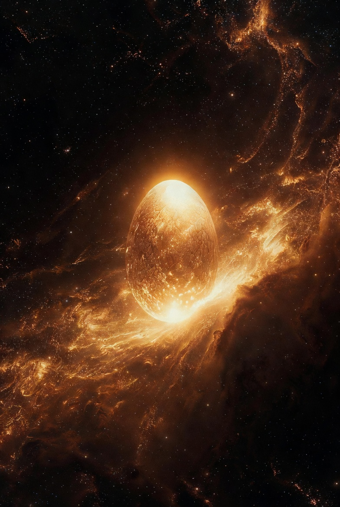

The Golden Womb • The Cosmic Egg of Creation
Before the universe existed, before time, before space — there was only a golden egg floating in the cosmic waters.
The concept of Hiranyagarbha (Golden Womb or Golden Egg) is one of the most beautiful and profound ideas in the entire Vedic tradition. It appears in the Rigveda and is later elaborated in the Upanishads and Puranas.
According to this ancient teaching, in the beginning, there was only darkness and the primordial waters. From this darkness emerged a golden egg — Hiranyagarbha — which contained the entire potential of the universe.
Hiranyagarbha is not just a myth. It is a profound symbol of how the entire universe emerged from a single point of concentrated potential — remarkably similar to the modern scientific concept of the Big Bang, where the entire universe emerged from a singularity.
The golden color represents the divine light of consciousness. The egg represents the womb of creation — the point where the unmanifest becomes manifest.
In our modern world, we often feel fragmented and disconnected. The teaching of Hiranyagarbha reminds us that we all come from the same source. We are not separate — we are expressions of the same golden light that created the stars.
Read the complete detailed exploration of Hiranyagarbha — with full Rigvedic verses, philosophical meaning, scientific parallels, and practical wisdom for modern seekers.
Read the Full Deep Article~2,400 words • 12—14 min read